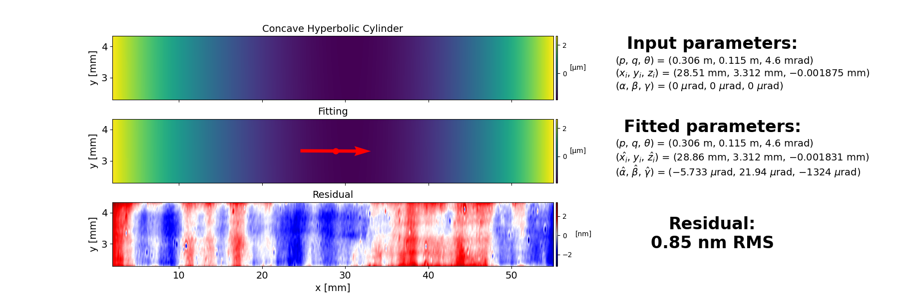

Note
Go to the end to download the full example code.
Example 05: Fit real data of a concave hyperbolic cylinder
This example shows how to fit real data of a concave hyperbolic cylinder using the XMF library.
import os
from scipy.io import loadmat
import xmf
concave_hyperbolic_cylinder_map = loadmat(os.path.join('..', '..', '..', 'real_data', 'sample_02_concave_hyperbolic_cylinder_height_map.mat'))
p = concave_hyperbolic_cylinder_map['params_target'][0][0][0][0][0]
q = concave_hyperbolic_cylinder_map['params_target'][0][0][1][0][0]
theta = concave_hyperbolic_cylinder_map['params_target'][0][0][2][0][0]
x_i = concave_hyperbolic_cylinder_map['params_target'][0][0][3][0][0]
y_i = concave_hyperbolic_cylinder_map['params_target'][0][0][4][0][0]
z_i = concave_hyperbolic_cylinder_map['params_target'][0][0][5][0][0]
alpha = concave_hyperbolic_cylinder_map['params_target'][0][0][6][0][0]
beta = concave_hyperbolic_cylinder_map['params_target'][0][0][7][0][0]
gamma = concave_hyperbolic_cylinder_map['params_target'][0][0][8][0][0]
x2d = concave_hyperbolic_cylinder_map['x2d']
y2d = concave_hyperbolic_cylinder_map['y2d']
z2d_measured = concave_hyperbolic_cylinder_map['z2d']
target_params_dict = {
'p': p,
'q': q,
'theta': theta,
'x_i': x_i,
'y_i': y_i,
'z_i': z_i,
'alpha': alpha,
'beta': beta,
'gamma': gamma
}
params_input_dict = {
'p': p,
'q': q,
'theta': theta
}
opt_dict = {
'p': False,
'q': False,
'theta': False
}
z2d_res, z2d_fit, opt_params_dict, opt_params_ci_dict, _ = xmf.fit_concave_hyperbolic_cylinder_height(x2d, y2d, z2d_measured, params_input_dict, opt_dict)
xmf.fig_show_2d_fitting_map(x2d, y2d, z2d_measured, z2d_fit, z2d_res, target_params_dict, opt_params_dict, opt_params_ci_dict,'Concave Hyperbolic Cylinder')
Total running time of the script: (0 minutes 0.940 seconds)